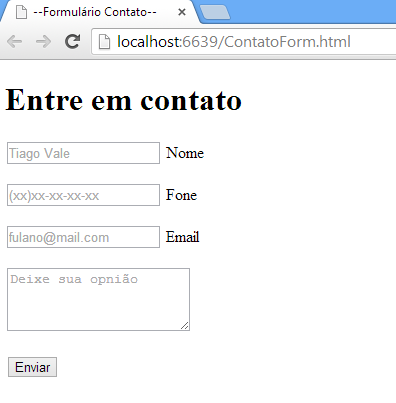

06. Interface Baseada em Formulário
Focada na entrada de dados, esta interface exibe campos de texto, caixas de seleção e botões para o envio de informações.
É o padrão consolidado mundialmente para realizar cadastros em sites, processos de login, compras online e pesquisas.
